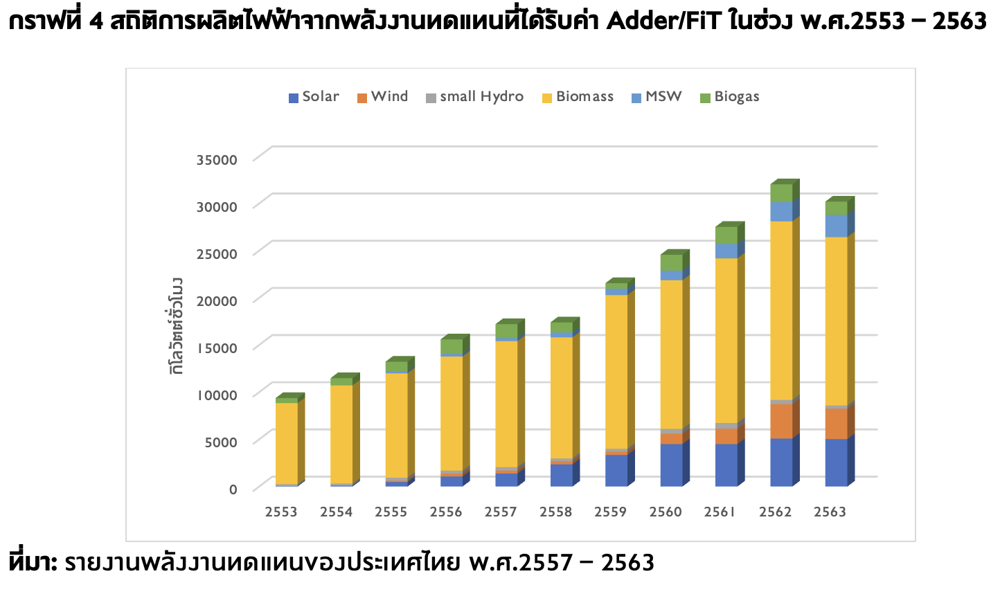

สถิติและกราฟ

สถิติ หมายถึง การรวบรวม จัดระเบียบ วิเคราะห์ และนำเสนอข้อมูลให้อยู่ในรูปแบบที่เข้าใจง่าย โดยสถิติช่วยให้เราสามารถเปรียบเทียบและสรุปข้อมูลได้ ส่วนกราฟใช้แสดงข้อมูลด้วยภาพ เช่น กราฟแท่ง กราฟเส้น และกราฟวงกลม ซึ่งช่วยให้เห็นความแตกต่าง แนวโน้ม และความสัมพันธ์ของข้อมูลได้อย่างชัดเจน และสามารถนำไปใช้ในการตัดสินใจในชีวิตประจำวันได้อย่างเหมาะสม.